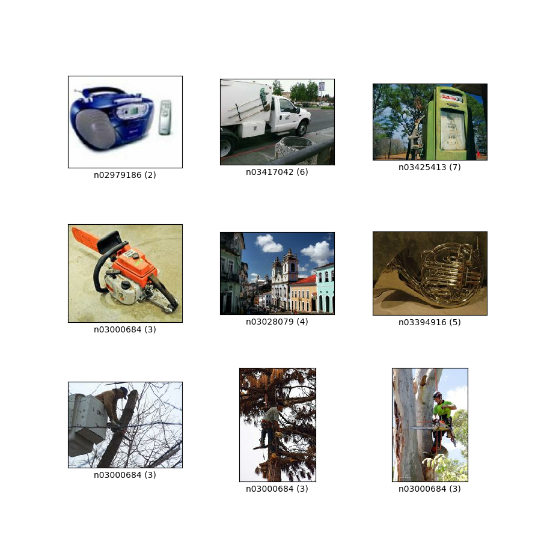
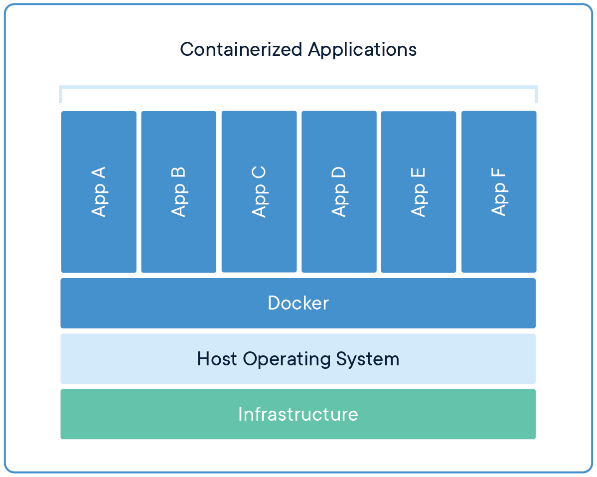
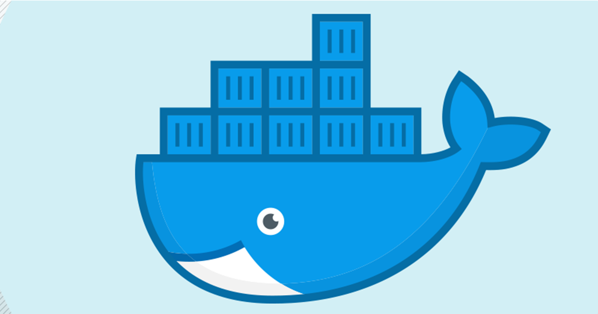

Why Modularity?
- 1. Reuse and access management
- 2. Scalability

adina@bulk1 in /ds/hcp/super on git:master❱ datalad status --annex -r
15530572 annex'd files (77.9 TB recorded total size)
nothing to save, working tree cleanWhy Modularity?
- 3. Transparency
Original:
/dataset
├── sample1
│ └── a001.dat
├── sample2
│ └── a001.dat
...
Without modularity, after applied transform (preprocessing, analysis, ...):
/dataset
├── sample1
│ ├── ps34t.dat
│ └── a001.dat
├── sample2
│ ├── ps34t.dat
│ └── a001.dat
...
Why Modularity?
- 3. Transparency
Original:
/raw_dataset
├── sample1
│ └── a001.dat
├── sample2
│ └── a001.dat
...
/derived_dataset
├── sample1
│ └── ps34t.dat
├── sample2
│ └── ps34t.dat
├── ...
└── inputs
└── raw
├── sample1
│ └── a001.dat
├── sample2
│ └── a001.dat
...
A machine-learning example
Code along or try it later athandbook.datalad.org/usecases/ml-analysis.html
Analysis layout
|
 Imagenette dataset |
Prepare an input dataset
- Create a stand-alone input dataset
- Either add data and
datalad saveit, or use commands such asdatalad download-urlordatalad add-urlsto retrieve it from web-sources
Configure and setup an analysis dataset
- Given the purpose of an analysis dataset, configurations can make it easier to use:
-c yodaprepares a useful structure-c text2gitkeeps text files such as scripts in Git- The input dataset is installed as a subdataset
- Required software is containerized and added to the dataset
Sharing software environments: Why and how
Science has many different building blocks: Code, software, and data produce research outputs.
The more you share, the more likely can others reproduce your results
Sharing software environments: Why and how
- Software can be difficult or impossible to install (e.g. conflicts with existing software, or on HPC) for you or your collaborators
- Different software versions/operating systems can produce different results: Glatard et al., doi.org/10.3389/fninf.2015.00012
Software containers
- Put simple, a cut-down virtual machine that is a portable and shareable bundle of software libraries and their dependencies
- Docker runs on all operating systems, but requires "sudo" (i.e., admin) privileges
- Singularity can run on computational clusters (no "sudo") but is not (well) on non-Linux
- Their containers are different, but interoperable - e.g., Singularity can use and build Docker Images
|  |  |
The datalad-container extension
-
The
datalad-containerextension gives DataLad commands to add, track, retrieve, and execute Docker or Singularity containers.
pip/conda install datalad-containerDid you know...
-
Helpful resources for working with software containers:
- repo2docker can fetch a Git repository/DataLad dataset and builds a container image from configuration files
- neurodocker can generate custom Dockerfiles and Singularity recipes for neuroimaging.
- The ReproNim container collection, a DataLad dataset that includes common neuroimaging software as configured singularity containers.
- rocker - Docker container for R users
Prepare data
- Add a script for data preparation (labels train and validation images)
- Execute it using
datalad containers-run
Train models and evaluate them
- Add scripts for training and evaluation. This dataset state can be tagged to identify it easily at a later point
- Execute the scripts using
datalad containers-run - By dumping a trained model as a joblib object the trained classifier stays reusable
After the workshop
-
If you have a question after the workshop, you can reach out for help:
- Reach out to to the DataLad team via
- Matrix (free, decentralized communication app, no app needed). We run a weekly Zoom office hour (Thursday, 4pm Berlin time) from this room as well.
- the development repository on GitHub
- Reach out to the user community with
- A question on neurostars.org
with a
dataladtag - Find more user tutorials or workshop recordings
- On DataLad's YouTube channel
- In the DataLad Handbook
- In the DataLad RDM course
- In the Official API documentation